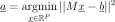
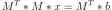

SVDMethod¶
-
class
SVDMethod(*args)¶ Least squares solver using SVD decomposition.
- Available constructors:
SVDMethod(proxy, y, weight, indices)
SVDMethod(proxy, y, indices)
Parameters: proxy :
DesignProxyInput sample
y :
NumericalSampleOutput sample
weight : sequence of float
Output weights
indices : sequence of int
Indices allowed in the basis
See also
Methods
buildCurrentBasis()Build the current basis. computeWeightedDesign([whole])Build the design matrix. getBasis()Basis accessor. getClassName()Accessor to the object’s name. getCurrentIndices()Current indices accessor. getGramInverse()getGramInverseTrace()getH()getHDiag()getId()Accessor to the object’s id. getInitialIndices()Initial indices accessor. getInputSample()Input sample accessor. getName()Accessor to the object’s name. getOutputSample()Output sample accessor. getShadowedId()Accessor to the object’s shadowed id. getVisibility()Accessor to the object’s visibility state. getWeight()Weights accessor. hasName()Test if the object is named. hasVisibleName()Test if the object has a distinguishable name. setName(name)Accessor to the object’s name. setShadowedId(id)Accessor to the object’s shadowed id. setVisibility(visible)Accessor to the object’s visibility state. solve(rhs)Solve the least-squares problem. solveNormal(rhs)Solve the least-squares problem using normal equation. trashDecomposition()Drop the current decomposition. update(addedIndices, conservedIndices, ...)Update the current decomposition. -
__init__(*args)¶
-
buildCurrentBasis()¶ Build the current basis.
Returns: phi :
BasisThe basis according to current indices
-
computeWeightedDesign(whole=False)¶ Build the design matrix.
Parameters: whole : bool, defaults to False
Whether to use the initial indices instead of the current indices
Returns: psiAk :
MatrixThe design matrix
-
getBasis()¶ Basis accessor.
Returns: basis :
getBasisBasis.
-
getClassName()¶ Accessor to the object’s name.
Returns: class_name : str
The object class name (object.__class__.__name__).
-
getCurrentIndices()¶ Current indices accessor.
Returns: indices :
IndicesIndices of the current decomposition in the global basis.
-
getId()¶ Accessor to the object’s id.
Returns: id : int
Internal unique identifier.
-
getInitialIndices()¶ Initial indices accessor.
Returns: indices :
IndicesInitial indices of the terms in the global basis.
-
getInputSample()¶ Input sample accessor.
Returns: inputSample :
NumericalSampleInput sample.
-
getName()¶ Accessor to the object’s name.
Returns: name : str
The name of the object.
-
getOutputSample()¶ Output sample accessor.
Returns: inputSample :
NumericalSampleOutput sample.
-
getShadowedId()¶ Accessor to the object’s shadowed id.
Returns: id : int
Internal unique identifier.
-
getVisibility()¶ Accessor to the object’s visibility state.
Returns: visible : bool
Visibility flag.
-
getWeight()¶ Weights accessor.
Returns: weight :
NumericalPointWeights.
-
hasName()¶ Test if the object is named.
Returns: hasName : bool
True if the name is not empty.
-
hasVisibleName()¶ Test if the object has a distinguishable name.
Returns: hasVisibleName : bool
True if the name is not empty and not the default one.
-
setName(name)¶ Accessor to the object’s name.
Parameters: name : str
The name of the object.
-
setShadowedId(id)¶ Accessor to the object’s shadowed id.
Parameters: id : int
Internal unique identifier.
-
setVisibility(visible)¶ Accessor to the object’s visibility state.
Parameters: visible : bool
Visibility flag.
-
solve(rhs)¶ Solve the least-squares problem.

Parameters: b : sequence of float
Second term of the equation
Returns: a :
NumericalPointThe solution
-
solveNormal(rhs)¶ Solve the least-squares problem using normal equation.

Parameters: b : sequence of float
Second term of the equation
Returns: x :
NumericalPointThe solution
-
trashDecomposition()¶ Drop the current decomposition.
-
update(addedIndices, conservedIndices, removedIndices, row=False)¶ Update the current decomposition.
Parameters: addedIndices : sequence of int
Indices of added basis terms.
conservedIndices : sequence of int
Indices of conserved basis terms.
removedIndices : sequence of int
Indices of removed basis terms.